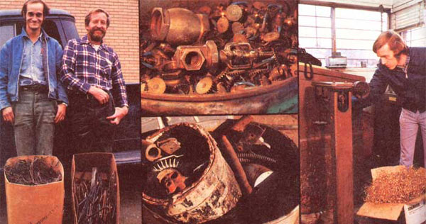
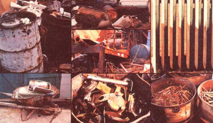
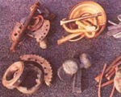
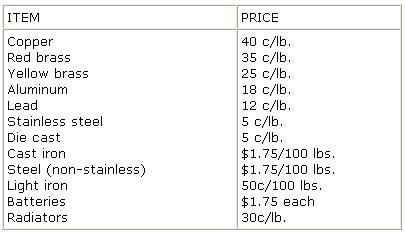
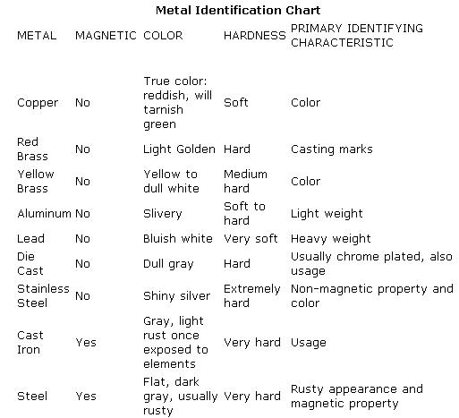

Most people know that aluminum (in the form of beer cans, piepans, foil, etc.) can be sold to "recycling centers" for about 18 cents per pound. "What most people don't know," says Jeff Friend of Lexington, Virginia, "is that a wide variety of other metals- including brass, copper, lead, steel, and iron-can be cashed in' too ... and that it's not at all difficult to round up $50 worth of 'junk' metal in a single afternoon."
You may not believe this, but for the last 12 years I've been turning brass, aluminum, copper, iron, steel, and lead into gold. No, I'm not an alchemist ... I'm what's known in the trade as a junker. I comb the local dumps (and the countryside) in search of scrap metal ... then sell that scrap to dealers who are willing to pay me anywhere from $1.75 to $40 per 100-pound load of the material.
I've found that "scrapping" can add $50 to my monthly income with only the slightest amount of effort and equipment ... and I can tell you from experience that as a full-time pursuit, metals scavenging can bring a person well over $500 a month. I'm definitely hooked on junking, because it's not only a dependable source of extra cash for the maintenance of my homestead, but It enables me to be self-employed whenever I want ... and I like the good feeling I get when I recycle a "useless" piece of metal (and leave the area that it came from cleaned up).
One of scrapping's biggest attractions is that It requires little or no start-up capital, special tools, or prior experience. (There certainly is no shortage of raw materials: In today's throw-it-away society, junk abounds.) Anyone who has a few common tools, a car or truck, a little storage space, and a moderate amount of initiative can get started in the metal-recycling business right away.
Before you get started, you'll need a small magnet (the ordinary "five-and-ten" kind will do OK) and a file (I use a two- to three-incher, such as is commonly used to file ignition points). Both file and magnet should fit easily into a pocket so that you can tote them with you at all times.
Other tools that come in handy include: wire cutters, a regular and a Phillips screwdriver, Vise-Grip pliers, regular pliers, and a hammer. Additional tools will sometimes be useful-especially when you're taking junk off an old car- but you can deal with most types of scrap metal with just the implements listed above. (Hint: You'll find it pays to stash a "junking toolbag" in your car or truck.)
Contrary to what you might think, you do not need a truck to make it in the scrapping business. To be sure, large loads of scrap Iron are easier to transport in a pickup than in a passenger car ... but the fact is you can fit two or three feed sacks full of copper (each worth about $50) into most any car ... even a VW.
Storage requirements in this business are minimal: You can wipe from your mind any visions you may have of old Maytags sitting in heaps in your back yard. In between trips to the junk dealer,
I keep most of my scrap metals in feed bags located in an out-of-the-way corner. You should be able to stash most of what you round up under the porch, behind the woodshed, in your garage, or wherever you have some spare space.
The successful junker is concerned with basically just ten metals. In order of their decreasing value, they are: copper, red brass, yellow brass, aluminum, lead, die cast, stainless steel, cast Iron, steel, and light iron. The prices paid for these metals fluctuate from month to month according to the laws of supply and demand, but to give you a rough Idea of how much money you can expect to make as a scrapper, I've prepared the following table showing what prices were in effect in Virginia as of April 1977:
The identification of scrap metals is fairly easy (this Is where the file and magnet prove to be invaluable). I begin by checking to see if a piece of junk is magnetic ... then I scrape away any plating, oxidation, or paint with my file to determine the specimen's true color. I also check the piece's hardness and pick it up to get an idea of how heavy it is per unit of volume. In some cases, the item's function is a tip-off to its composition (car door handles, for instance, are made of die cast or "white metal").
Right now, let's take a look at some of the "semi-precious" metals you'll be encountering and where you can find them (and how to identify 'em when you do).
In the world of junk, copper is king. I've been paid anywhere from 350 to $1.05 a pound for this metal ... which -as scrap goes-is pretty darned good. (When copper prices are up, It's not uncommon to read of copper thefts in the paper.)
Junk dealers separate copper scraps into three grades. Grade One consists of copper that's shiny, clean, and 1000/0 free of solder, plastic, paint, varnish, etc. (The copper wire in electric motors is often varnished bright red for Insulation.) Grade Two includes burnt wire as well as tarnished, corroded, or painted scrap. Grade Three covers all light copper, very thin scrap (e.g., root flashing), and copper foil. As you'd expect, Grade One commands the highest price ... Grade Three, the lowest.
Copper ranks second only to silver In its ability to conduct electricity and is for that reason - used in virtually all electric motors and electrical wiring. Hence, small motors (including car generators, starters, fan motors, etc., and the motors in old vacuum cleaners and other appliances) will-along with discarded wiring- constitute one of your best sources of this metal.
(Author's note: The only trouble with copper wire is that it's usually coated with some kind of plastic insulation, which - If not removed - downgrades the metal's value. Large-gauge wire can be denuded of this coating relatively easily by pulling It along the edge of a sharp knife, or the insulation can be burned off. Stripping is not always easy, however-especially in the case of small-gauge or multi-stranded wire-and burning copper wire is an ecological disaster. You'll just have to decide for yourself whether to sell your copper wire "as is" -plastic and all-or clean.)
Because copper is exceedingly non-corrosive, it's frequently used in tubing (especially for plumbing uses). Your best bet for finding free copper tubing is probably to frequent construction sites and friendly plumbers. Old refrigerators-those made prior to, say, the late 1960's -are also sometimes a good source of copper tubing. (I've gleaned as much as $5.00 worth of copper from a single old fridge's cooling unit.) If you decide to take the tubing from a refrigerator, do remember that the tubes may contain Freon gas under pressure ... and that the escaping gas can be [1] cold to the touch (cold enough to burn you), [2] harmful if inhaled, and [3] no good for the ozone layer (to say the least). Use due caution when (and if) you decide to disconnect the tubing from an old refrigerator.
Brass pays less than copper but is more plentiful and thus is definitely worthwhile. There are two main kinds of brass to look for: red and yellow.
Red brass, or comp (short for "composition"), is really bronze, but you'll never hear it called its proper name by a scrap dealer. This metal-a copper/tin alloy-is usually cast (poured into a mold while molten) and thus has a "gravelly" texture. (To get a good idea of how red brass looks and feels, examine an ordinary outside water faucet.) Because it's a strong, corrosion-resistant metal, comp is used in applications where strength and durability count: e.g., in water valves, pipe fittings (such as "T" connectors), bearings in electrical motors, etc.
Yellow brass -the other main type of brass you'll come across-is weaker than comp and usually isn't used to make anything that must withstand pressure. You'll find yellow brass most frequently in control valves of gas ranges, gas range supply piping, sink traps, and plumbing fixtures. (Often, the metal will be chrome-plated for decorative purposes.)
Yellow brass is often tricky to distinguish from brass of the red variety, since both are yellowish In color. I rely on function and appearance to determine which is which. (In general, red brass is a gravelly, golden yellow, while yellow brass is smooth and bright ... almost a dull white, at times.)
Window screens were once made of brass (and still are, occasionally, although brass is now being replaced by aluminum and nylon for this application). If you move into (or dismantle) a funky old house, be sure to file away at the screens before you discard any of them ... they may be worth some money.
Aluminum - the do-everything metal of the 60's and 70's -was first discovered in 1820 and in Its early days was a rarity, a present for dignitaries. Today, as you know, aluminum is commonplace ... so much so that people routinely discard tons of it.
Aluminum's main giveaway, of course, is its extremely low weight-to-volume ratio. This property- together with its all-round durability and resistance to rust-accounts for aluminum's use in cans, storm windows, window screens, ladders, pots, pans, foil, lawn mower engines, airplanes, and other objects.
Occasionally, you may have trouble distinguishing aluminum from stainless steel, since both metals have similar colors. The "file test" eliminates this problem, however. If you file away at aluminum, large flakes of metal will come off. Do the same with stainless, and you'll get nothing.
Aluminum has often been my mainstay when other metals were scarce, because of its ready availability. Foil, pie tins, beverage containers ... nothing is too small to collect when it comes to this silvery-white metal, although I wouldn't go out looking just for beer cans. (Of course, if you drink lots of beer ....
I need say very little about this metal, except that [1] its weight will serve to identify it every time, and [2] the pure metal can be scratched with a fingernail (it's that soft). You'll find lead in automotive battery terminal connectors, wheel balancing weights, and fishing sinkers, to name just a few sources.
Aluminum can be mixed with zinc and cast. The resulting metal is known in the trade as die east, white metal, or pot metal.
Die cast-which is heavier than aluminum -is usually chrome-plated and is extremely brittle. As the metal corrodes, it becomes covered with blackish pits and the chrome flakes off. Trophies, hood ornaments, car radio knobs, car door handles, refrigerator door handles, toy guns, carburetors, and fuel pumps (in some cases) are all examples of things made of die cast.
At 50 a pound, die cast won't make you rich ... but why not throw a few car door handles or other pot metal items into a "die cast fund" from time to time? Pound for pound, die cast is less bulky than aluminum ... and its brittleness makes it easy to remove from cars, refrigerators, trophies, etc. Just pry or pound on a piece of pot metal, and it'll come right off.
Stainless steel is a relatively hard metal-heavier than aluminum, but lighter than die cast -and, of course, it's very strong. (The stuff just won't bend, cut, or break without special tools.)
Stainless can range in magnetism from strong to weak to nothing at all, depending on the exact proportions of the different metals in any particular alloy. Junk dealers want only non-magnetic stainless steel, since it contains relatively large amounts of chrome and nickel. Some good sources for this kind of stainless steel are metal sinks, silverware (the kind that's not made of silver), cooking utensils, pots, pans, and beer kegs.
Cast iron is any kind of iron that has been shaped by molding rather than by mechanical means, such as rolling or stamping. This metal can be distinguished from stainless steel by its brittleness.
Your best bet for finding cast-iron scraps is to go through old automobile parts: engine blocks, heads, intake and exhaust manifolds, water pumps, oil pumps, and bell housings. Sewer pipes, house radiators, and gas stove gratings are also occasional sources of cast iron. (I've yet to come across a discarded wood stove, although I know they do get junked because they do wear out.)
Next on our list of semiprecious metals is steel. Here, junk dealers (being junk dealers) draw a distinction between steel that's 1/811 thick or more, and less than 1/8"-thick metal, which they call "fight-iron".
Steel-as you know-is tremendously strong, so you'll come across it in car wheels, pipes, bumpers, machinery of all sorts, farm equipment, and wherever else a tough metal is needed. Unlike aluminum, steel will rust (unless it's stainless) ... and- in fact- rust is probably one of the best clues you have that what you're looking at is made of steel. (Note: When in doubt, you can tell ordinary steel from stainless by the magnet test. Ordinary steel is always magnetic.)
Light iron forms the bulk of what you see in almost every dumping spot in the country. (Old washing machines, stoves, refrigerators, and swing sets all fall in the "light iron" category.) Unfortunately, this kind of steel can be pretty hard to cash in on, just because it's so danged bulky per unit of weight. A pickup simply can't carry enough old washing machines, refrigerators, etc., to make a trip to the scrap dealer worthwhile, unless you don't have far to drive. (I'm including light iron here, though, In case you happen to have a mess of the stuff on your property somewhere. If you've got some - and you have to get rid of it anyway-take it to a scrap dealer instead of the dump. You'll make enough money to pay for your gas ... and maybe a pizza to boot.)
The same dealers that buy scrap metal will usually also be glad to buy car batteries and radiators ... batteries because of the lead in them, and radiators because of their copper and brass content. Usually, the batteries will be ground up and the lead extracted from them, while radiators are melted down to separate out the copper and brass.
A word of caution: Remember-when you handle batteries-to keep the cells upright at all times. The cells contain a mixture of acids strong enough to eat through most anything: clothing, paint, metal, skin, hair, etc.
In your haste to find and cash in on scrap metal, don't let yourself become blinded to the fact that some items are worth far more money as antiques than as scrap. When I was younger and more naive, I once (in a fit of "copper fever") condemned an old copper washtub to the smelters for about $2.00. The same tub--sold as an antique-would have netted me ten times as much! Live and learn.
Once you've managed to accumulate 20 or 30 or 50 pounds of copper, brass, or whatever, it's time to consult the Yellow Pages. Look under "Junk" or "Scrap Metals". (Also check the classified ads in your paper under "Merchandise Wanted".) Then call every dealer and ask what he buys and how much he pays. Scrap prices vary from day to day and dealer to dealer. The object, of course, is to find out who pays the best prices for the metals you've got. Usually no one establishment will pay the highest price for all metals: One dealer may lay out the top dollar for copper, another yard will pay the most for batteries, and so on. If you have a significant quantity (25 pounds or so) of metal, it might profit you to go from dealer to dealer and sell your wares for the best prices. If this isn't practical, you'll just have to determine the best course of action by weighing the cost of gasoline against the poundage of scrap involved and your time.
In general, you'll find that the better junk markets are located in the larger cities (population 40,000 or more). That's because there are many middlemen in the junk world, and when you sell your scrap to a big-city buyer, the scrap goes through fewer transactions down the line than it otherwise would. I try to coordinate my scrap runs with other chores in the big city so that I only have to drive in every two months or so. (If you have just a small quantity of goods and you're forced to sell locally, don't fret: You'll only be out some small change ... if that.)
I've found-quite often-that if one dealer pays the most for steel (or copper, or whatever) one week, he'll usually give the best price for steel the next week. As a result, I tend to patronize the same yard(s) over and over, and after a while I begin to develop a relationship with my junkman. There are some definite advantages to this. For instance, a dealer who knows and likes you will often round the weight of your scrap to the next higher number on the scale (instead of rounding down), or let a dirty piece slip by that he otherwise wouldn't. (Years ago, the dealer in my hometown always used to give me a fifth of sippin' whiskey for Christmas.) The point is: It pays to be a steady customer.
Junk dealers-you'll find-want their scrap prepared in a certain way. The more care you take in cleaning your metals to suit your dealer or dealers, the more you'll profit. Care in preparation separates the amateurs from the pros and pays off in extra profits.
Almost all the dealers I've encountered have been honest and friendly. They'll gladly help you out in the beginning by explaining exactly how they want metal to enter their yard. Once you've been given cleaning instructions, it's imperative that you follow them to the letter ... otherwise, the dealer will have to do your work for you and pay you less money.
A few pointers on preparing scrap for market:
[1] Always keep metals of one kind grouped together (keep your aluminum all aluminum, brass all brass, etc.), and remove all foreign nuts and bolts.
[2] If you're not sure what kind of brass, steel, etc., you've got, always put the item In the higher-paying category. Your dealer will tell you if you're wrong.
[3] Remove the metal straps that are attached to both sides of a radiator. (They're only soldered on and will come off easily.) You'll lose money if you don't.
When you bring scrap in to a yard you'll usually put your materials on the balance scale, then-after the weighing the dealer will take it off. It's important-when your scrap is being weighed-that you check to see that nothing touches or interferes with the scale and that all material is on securely. (Make certain nothing is hanging over the side and distorting the reading.) Likewise, be sure the dealer doesn't make a mistake in weighing or figuring (he is, after all, only human).
If you have a trailer- or truckload of junk, the dealer will probably use a truck scale to determine the weight of your load ... in which case there's little you can do (short of calling in the state-licensed scale checker) to ensure the accuracy of the final reading.
Now you know the options. At this point, you need to examine your own situation and determine what kinds of metals will be worthwhile for you to recycle, and how much time you want to devote to junking.
Given unlimited time and limited money, almost any metal is worth pursuing. If-on the other hand-you're pretty tied up with other work, you may want to stick with the metals that yield the most bucks per unit of labor: copper, brass, etc. (and batteries and radiators).
Which metals you'll be able to retrieve in the greatest quantities will depend on your resourcefulness and the relative abundance of different kinds of scrap in your area. It's been my experience that light iron is generally the most plentiful, followed (in order of decreasing abundance) by steel, cast iron, aluminum, die cast, yellow brass, copper, batteries, radiators, lead, red brass, and stainless steel.
One nice thing about junking is that any scrap you keep in temporary storage can be looked upon as an emergency or "splurge" piggy bank or easy "mad money". Even if you do nothing more than save aluminum scraps (piepans, used foil, beverage cans, etc.), you'll find that in a few weeks' time you've accumulated $20 or $30 worth of recyclables ... enough to buy a hand grain mill, say, or finance a short weekend trip. In a year's time, you can easily rake in several hundred dollars (enough cash for your land taxes, perhaps, or auto insurance).
Those are the basic junking facts of life. From here on, it's up to you to use inventiveness to create your own personal method of scavenging and develop your own markets. (If you become as addicted to junking as I have, you can go on to explore other recycling possibilities, such as inner tubes, newspapers, cardboard, rags, glass, and mercury batteries.)
Why not give junking a try? It won't make you rich, but-take it from me-it'll sure put a jingle in your pockets (and a smile on your face)!
(The author would like to acknowledge the help of Lenna Ojure in preparing this story.)
There are certain places in this land where scrap metal presents itself in great abundance. One such spot is-of course-the city or county dump.
No dump is without its rewards, although finding-and hauling away-valuable metal objects is not always a simple matter. Depending on local ordinances, for example, your nearby dump may have a "no trespassing" sign ... which means you can't go in after hours (and I definitely don't advise you to trespass). Most dumps, however, are lenient about scavenging during regular dump hours. I usually dawdle while I unload my own trash at the dump and keep a vigilant eye out for copper, brass, or whatever. Nor do I often go away disappointed. In fact, most of the time I take home more than I bring.
Occasionally, a dump will have an attendant whose job is to (among other things) keep out junkers. Often, the guard's pay consists of all the valuable junk he can salvage, in which case he's really a pro. In this situation, I respect the man's position and back off.
You needn't rely entirely on dumps for your metal harvests, however. Local hillsides and ravines are often a generous source of scrap material. Your friends and neighbors are good potential sources of scrap, too. I've found that once I make it known that I'm "Into" junk, people will often beg me to clean up heaps of metallic refuse on their property and keep the haulings as recompense, with perhaps a dozen hot biscuits thrown in as a bonus.
Construction sites are still another veritable "gold mine" for the metal scavenger. Some plumbing contractors and electricians recycle their own leftovers, but the majority don't bother. The best way to lay claim to construction scraps is to become associated with the project in some way (i.e., become a member of the cleanup detail, or a general helper). Your other option is to ask the foreman for permission to clean up.
Oftentimes, local businesses can supply you with a fairly steady flow of scrap. Among the most fruitful establishments to visit are auto part rebuilders, body shops, garages, transmission repair shops, and gas stations. The only problem with these sources is that sometimes they'll ask you to take away junk items that you may not have a use for, as part of the deal. (Service stations, for example, usually want you to haul away their old tires along with their batteries and radiators, which-for me, anyway-means a trip to the dump as well as the scrap dealer.) Take this into account before you decide to do business with any automotive shop.
Two more possible sources that should not go overlooked are local manufacturers and contractors. Factories in your area may well be discarding tons of valuable metals per month (metals that you might be able to carry away for them). Likewise, aluminum siding contractors quite often throw away extra pieces of siding, and are usually happy for you to pick up the discards.
Finally, one of the all-time great bonanzas for the freelance recycler is the city or town "cleanup week". Call the sanitation departments of your neighboring towns to find out the applicable dates ... then drive around the neighborhood on the appointed day-early, before the garbage trucks get started-and keep your eyes open. (if you live fairly near a large city, count yourself lucky ... because the suburbs yield deluxe loot.)
Keep your eyes open for scrap metal at all times, wherever you go. If you see something of interest, always stop and investigate ... it's usually worth the effort. Never assume, though, that you'll be able to check it out later. There are many scavengers at large these days, and the item you saw earlier in the morning could well be gone by noon.
You've heard it said before: Gold is where you find it. The same is true for brass, copper, steel, iron, lead, and aluminum.-JF.
|
 Two happy guys about to swap some scrap metal for a few welcome extra bucks. Bronze, or red metal, above a photo of scrap steel. And, although larger amounts of scrap metal are weighed into a dealer's yard by truck or trailer load, smaller quantities?such as this box of yellow brass shavings?usually get weighed on a roll-around platform scale |
 FAR ABOVE: Look for saleable scrap metal in trash barrels, dumps, around old barns, on construction sites... anywhere that you can get permission to ""clean up"" an eyesore in return for carting off the recyclable materials that you're after. Old radiators are good examples of saleable cast iron. ABOVE: A wheelbarrow load of scrap aluminum...yellow brass, and No.1 and No. 2 junk copper |
 Scrap steel, yellow brass... and aluminum.. Above |
|
 |
 |
|